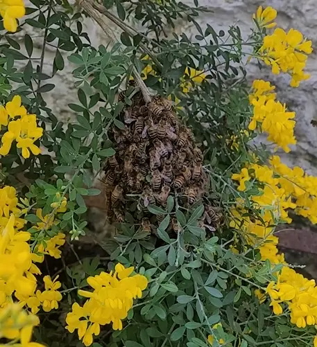

Last updated: 21 June 2026

What I Wish I Knew Before Buying My First Bees
When people ask me how I got into beekeeping, they are often surprised by the answer.
Like many people, I assumed that becoming a beekeeper involved months of preparation, attending courses, reading books and carefully planning the purchase of a first hive.
That wasn't my experience at all.
In fact, I never intended to become a beekeeper.
Everything changed when a swarm of bees unexpectedly arrived in my garden. If you would like to read the full story of how that happened, take a look at Why I Started Beekeeping.
What began as a chance encounter with a swarm ultimately turned into a hobby that I genuinely enjoy and continue to learn from every season.
Looking back, there are many things I wish I had known before I found myself responsible for thousands of honey bees.
I Had No Time to Prepare
One of the biggest differences between my beekeeping journey and that of many beginners is that I didn't have time to prepare properly.
If I could turn back the clock, I would have attended beginner beekeeping courses, joined my local beekeeping association and spent time reading books about bee behaviour, hive management and seasonal colony development.
Unfortunately, the bees had other ideas.
The swarm had already arrived, and I needed to make decisions quickly.
Within days, I found myself researching hives, protective clothing, smokers, hive tools and feeding equipment. I was trying to learn enough to care for a colony while simultaneously setting everything up.
It felt like being thrown in at the deep end.
Looking back, I realise how valuable formal beekeeping training can be for new beekeepers. A good course provides a foundation of knowledge that can save a lot of confusion and uncertainty later on. If you are at the very start of your journey, my getting started with beekeeping guide is a useful place to begin.
The Equipment Mistakes I Made
When you first start researching beekeeping equipment, it all seems relatively straightforward.
Buy a hive, buy some bees and away you go.
The reality is quite different.
I quickly discovered there are multiple hive types, different frame sizes, various styles of protective clothing and countless beekeeping accessories.
As a complete beginner, I didn't always know what I actually needed versus what would simply be useful later.
I also underestimated how many smaller items would eventually be required.
The hive itself is only the beginning.
Before long, you'll likely need:
- A bee suit
- Gloves
- A smoker
- Smoker fuel
- Hive tools
- Feeders
- Spare frames
- Foundation
- Queen marking equipment
- Varroa monitoring equipment
- Hive record sheets
None of these items are particularly surprising individually, but together they quickly add up.
If I could start again, I would spend more time researching equipment before making purchases and speak to experienced beekeepers about what is genuinely essential. I have also put together a dedicated beekeeping equipment guide for beginners who want a clearer idea of what they may need.
The Cost Was Higher Than I Expected
One thing that genuinely surprised me was the overall cost of starting beekeeping.
Many people assume that because bees collect their own food, beekeeping is a relatively inexpensive hobby.
The truth is that there can be a significant initial investment.
The cost of bees, a hive, protective clothing and basic tools can easily run into several hundred pounds before you even carry out your first inspection.
Then there are the ongoing costs.
Frames need replacing. Additional hive components become necessary as colonies grow. Treatments may be required. Equipment wears out over time.
I'm certainly not saying beekeeping isn't worth the money. Far from it.
However, I wish somebody had explained the true cost of getting started before I found myself repeatedly clicking "add to basket".
The Hidden Cost of Honey Extraction
Another expense that never crossed my mind when I first started beekeeping was honey extraction equipment.
Like many beginners, I initially focused on the cost of the hive, bees and protective clothing. What I didn't realise was that if my colonies became successful and produced surplus honey, I would eventually need a completely different set of equipment to extract, process and bottle it.
A basic honey extraction setup can include:
- Honey extractor
- Uncapping tray
- Uncapping knife or fork
- Settling tanks
- Honey buckets
- Filters and strainers
- Jars and lids
- Labels and packaging
When you add everything together, the costs can quickly become significant.
What I didn't know at the time was that many local beekeeping associations own extraction equipment that members can hire for a small fee. Instead of purchasing expensive equipment outright, many beekeepers simply rent an extractor when they need it.
I also discovered that being part of a local beekeeping community can save money in other ways.
Experienced beekeepers often sell surplus equipment at much lower prices than buying new. Whether it's spare supers, hive parts, extractors or tools, there are often bargains to be found through local associations and fellow beekeepers.
Many associations also organise bulk purchases for members. Common items such as glass jars, fondant, sugar, treatments and other consumables can often be purchased at significantly reduced prices when bought in larger quantities.
If I had known this from the beginning, I would have saved myself both money and unnecessary worry.
It's one of the many reasons I now recommend that new beekeepers join their local association as early as possible. The knowledge, support and cost savings available through local beekeeping groups can be just as valuable as the courses themselves.
The Learning Curve Was Steeper Than I Expected
Perhaps the biggest surprise of all was just how much there is to learn.
When I first opened a hive, I quickly realised that identifying what was happening inside wasn't nearly as easy as experienced beekeepers make it look.
At first, everything appeared confusing.
Eggs, larvae, capped brood, pollen stores, nectar, queen cells and drone brood all blended into one overwhelming picture.
Experienced beekeepers can often glance at a frame and immediately understand what is happening within the colony.
I couldn't.
Every inspection raised new questions.
Was the queen present?
Was the brood pattern healthy?
Were they preparing to swarm?
Did they have enough stores?
The more I learned, the more I realised there was still so much I didn't know.
Over time, things became easier. Patterns started to emerge and I gradually developed confidence in my observations.
But those early inspections were definitely a learning experience.
The Time Commitment Was Bigger Than Expected
Before becoming a beekeeper, I assumed inspections would take a few minutes every now and then.
In reality, successful beekeeping requires a regular commitment of time.
There are inspections to complete, equipment to maintain, records to keep and seasonal management tasks to carry out.
Then there is the learning itself.
I spent countless evenings reading articles, watching videos and researching subjects such as swarm control, queen cells, diseases, pests and winter preparation.
Beekeeping isn't simply about owning bees.
It's about continually learning how to care for them.
What I Would Do Differently
If I could go back and start again, there are several things I would change.
First, I would attend a beginner beekeeping course before acquiring bees.
Second, I would join a local beekeeping association and learn from experienced members.
Third, I would spend more time understanding bee biology and colony behaviour before opening my first hive.
Most importantly, I would remind myself that nobody becomes an expert overnight.
Every beekeeper starts somewhere.
Mistakes happen.
Questions arise.
Learning takes time.
That's perfectly normal.
Was It Worth It?
Absolutely.
Despite the mistakes, confusion and steep learning curve, I wouldn't change the outcome.
The unexpected swarm that landed in my garden completely changed my plans and introduced me to a fascinating hobby that I continue to enjoy today.
What began as an unplanned encounter with a swarm eventually became the beekeeping journey described in Why I Started Beekeeping.
Beekeeping has taught me patience, observation and respect for one of nature's most remarkable insects.
More importantly, it has shown me that learning never really stops.
My Advice to New Beekeepers
If you're considering keeping bees, my advice is simple.
Take advantage of the opportunities that I didn't have.
Attend beginner courses.
Read books.
Join your local beekeeping association.
Speak to experienced beekeepers.
Learn as much as possible before your first bees arrive.
And if you unexpectedly find yourself in the same position I did, with a swarm suddenly changing your plans, don't panic.
You'll make mistakes.
You'll learn lessons the hard way.
But you'll also discover why so many people become fascinated by bees and spend a lifetime learning about them.
Happy beekeeping,
Colin
Join the Conversation
Beekeeping is all about learning from one another. Follow BeezKnees for more inspection notes, seasonal observations and practical beekeeping tips.